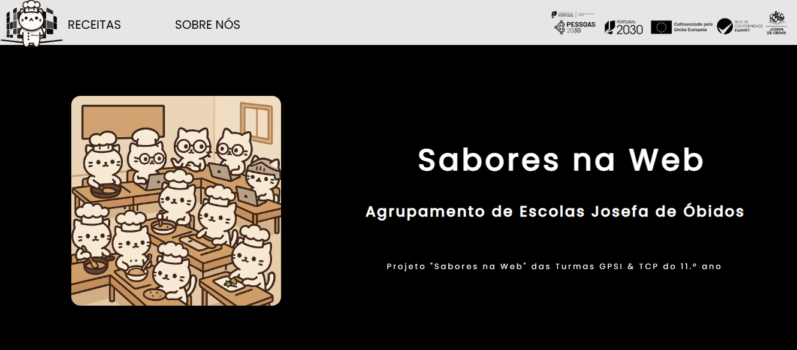
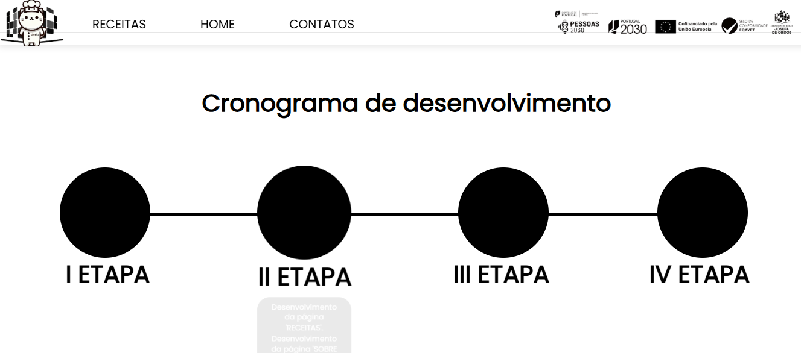

Sites
Site da Escola
Website institucional feito para a escola como parte do curso profissional. Desenvolvido com HTML, CSS e JS.


Desenvolvedor de Software | Estudante | Entusiasta Técnico
Gosto de aprender e de desenvolver as minhas competências, sobretudo em programação. Valorizo conhecer novas pessoas, descobrir a cultura portuguesa e enfrentar novos desafios. Procuro sempre crescer como pessoa e como profissional.
Eu sou da Ucrânia e cheguei a Portugal por causa da guerra e da situação perigosa na minha região.
Foi precisamente no dia 25 de abril de 2022, por acaso no Dia da Revolução dos Cravos, que aqui cheguei. Essa data marcou o início de uma nova etapa na minha vida.
Neste novo país, adaptei-me e fui conhecendo a cultura, a língua e a história portuguesas.
Passei a maior parte do tempo num ambiente português que me revelou a beleza deste país, onde tenho a honra de estar.
Estou muito grato a Portugal por me ter dado proteção e por todas as pessoas novas que encontrei ao longo do caminho.
Tenho a intenção de contribuir para o desenvolvimento de Portugal, e talvez essa seja a minha missão como alguém que teve a sorte de estar num país tão acolhedor e que quer retribuir tudo o que recebeu — apoio, experiência e novas oportunidades.
Sou apaixonado pelo mundo da tecnologia, especialmente pela programação.
Gosto de criar coisas que parecem complicadas. Adoro a sensação de poder transformar símbolos simples em algoritmos complexos.
Estou sempre a aprender, a aceitar desafios e a melhorar as minhas competências todos os dias.
Sinto que cada dia é uma oportunidade para crescer, para descobrir algo novo e para me superar.
Este site foi criado como um pequeno portefólio que vai ser melhorado com o tempo.
Isto é apenas o começo :)
Site da Escola
Website institucional feito para a escola como parte do curso profissional. Desenvolvido com HTML, CSS e JS.
import tkinter as tk
import csv
from tkinter import ttk
import os
from datetime import datetime
import tkinter.messagebox as messagebox
#Funções CSV
def criar_ficheiro_csv():
if not os.path.exists("clientes.csv"):
with open("clientes.csv", mode="w", newline="", encoding="utf-8-sig") as f:
writer = csv.writer(f)
writer.writerow(["ID", "Nome", "Email", "Telemóvel", "Localização", "Data de Criação"])
def criar_ficheiro_interacoes():
if not os.path.exists("interações.csv"):
with open("interações.csv",mode="w",newline="",encoding="utf-8-sig") as f:
writer = csv.writer(f)
writer.writerow(["ID_Interacao", "ID_Cliente", "Tipo", "Data", "Descricao"])
def obter_next_id():
try:
with open("clientes.csv", newline="", encoding="utf-8-sig") as f:
reader = csv.reader(f)
next(reader)
linhas = list(reader)
if linhas:
ultimo_id = int(linhas[-1][0])
return ultimo_id + 1
except:
pass
return 1
def obter_next_id_interacao():
try:
with open("interações.csv",newline="",encoding="utf-8-sig") as f:
reader = csv.reader(f)
next(reader)
linhas = list(reader)
if linhas:
ultimo_id = int(linhas[-1][0])
return ultimo_id + 1
except:
pass
return 1
# Functions of Interface
def pesquisar_cliente():
termo = entrada_pesquisa.get().lower()
for row in tabela.get_children():
tabela.delete(row)
try:
with open("clientes.csv", newline="", encoding="utf-8-sig") as f:
reader = csv.reader(f)
next(reader)
for linha in reader:
nome = linha[1].lower()
email = linha[2].lower()
if termo in nome or termo in email:
tabela.insert("", tk.END, values=linha)
except:
pass
def valid_email(email):
return "@" in email and "." in email
def adicionar_cliente():
id_cliente = obter_next_id()
nome = entrada_nome.get()
email = entrada_email.get()
telemovel = entrada_telemovel.get()
localizacao = entrada_localizacao.get()
data = datetime.now().strftime("%Y-%m-%d")
if not nome or not email:
messagebox.showerror("Erro", "Nome e Email são obrigatórios.")
return
if not valid_email(email):
messagebox.showerror("Erro", "Email inválido.")
return
if nome and email:
with open("clientes.csv", mode="a", newline="", encoding="utf-8-sig") as f:
writer = csv.writer(f)
writer.writerow([id_cliente, nome, email, telemovel, localizacao, data])
messagebox.showinfo("Sucesso", f"Cliente '{nome}' adicionado com sucesso!")
limpar_campos()
carregar_clientes()
def limpar_campos():
entrada_nome.delete(0, tk.END)
entrada_email.delete(0, tk.END)
entrada_telemovel.delete(0, tk.END)
entrada_localizacao.delete(0, tk.END)
def carregar_clientes():
for row in tabela.get_children():
tabela.delete(row)
try:
with open("clientes.csv", newline="", encoding="utf-8-sig") as f:
reader = csv.reader(f)
next(reader)
for linha in reader:
tabela.insert("", tk.END, values=linha)
except:
pass
def selecionar_cliente(event):
selecionado = tabela.focus()
if selecionado:
valores = tabela.item(selecionado, 'values')
if valores:
entrada_nome.delete(0, tk.END)
entrada_nome.insert(0, valores[1])
entrada_email.delete(0, tk.END)
entrada_email.insert(0, valores[2])
entrada_telemovel.delete(0, tk.END)
entrada_telemovel.insert(0, valores[3])
entrada_localizacao.delete(0, tk.END)
entrada_localizacao.insert(0, valores[4])
def editar_cliente():
selecionado = tabela.focus()
if not selecionado:
messagebox.showerror("Erro", "Nenhum cliente selecionado para editar.")
return
valores = tabela.item(selecionado, 'values')
if not valores:
messagebox.showerror("Erro", "Nenhum cliente selecionado para editar.")
return
id_cliente = valores[0]
nome = entrada_nome.get()
email = entrada_email.get()
telemovel = entrada_telemovel.get()
localizacao = entrada_localizacao.get()
linhas_novas = []
with open("clientes.csv", newline="", encoding="utf-8-sig") as f:
reader = csv.reader(f)
header = next(reader)
for linha in reader:
if linha[0] == id_cliente:
linha = [id_cliente, nome, email, telemovel, localizacao, linha[5]]
linhas_novas.append(linha)
with open("clientes.csv", mode="w", newline="", encoding="utf-8-sig") as f:
writer = csv.writer(f)
writer.writerow(header)
writer.writerows(linhas_novas)
carregar_clientes()
limpar_campos()
def eliminar_cliente():
selecionado = tabela.focus()
if not selecionado:
messagebox.showerror("Erro", "Nenhum cliente selecionado para eliminar.")
return
valores = tabela.item(selecionado, 'values')
if not valores:
messagebox.showerror("Erro", "Nenhum cliente selecionado para eliminar.")
return
id_cliente = valores[0]
nome = valores[1]
resposta = messagebox.askyesno("Confirmação",f"Tem certeza que deseja eliminar o cliente '{nome}'?")
if not resposta:
return
linhas_novas = []
with open("clientes.csv", newline="", encoding="utf-8-sig") as f:
reader = csv.reader(f)
header = next(reader)
for linha in reader:
if linha[0] != id_cliente:
linhas_novas.append(linha)
with open("clientes.csv", mode="w", newline="", encoding="utf-8-sig") as f:
writer = csv.writer(f)
writer.writerow(header)
writer.writerows(linhas_novas)
messagebox.showinfo("Sucesso", f"Cliente '{nome}' eliminado com sucesso!")
carregar_clientes()
limpar_campos()
def abrir_janela_interacao():
cliente_selecionado = tabela.selection()
if not cliente_selecionado:
messagebox.showerror("Erro", "Por favor, selecione um cliente.")
return
cliente = tabela.item(cliente_selecionado)["values"]
if not cliente:
messagebox.showerror("Erro", "Cliente inválido.")
return
id_cliente = cliente[0]
nome_cliente = cliente[1]
janela_interacao = tk.Toplevel(janela)
janela_interacao.title(f"Nova Interação para {nome_cliente}")
janela_interacao.geometry("600x500")
janela_interacao.configure(bg="#1e1e1e")
tk.Label(janela_interacao,text=f"Cliente : {nome_cliente}",bg="#1e1e1e",fg="#dddddd").pack(pady=10)
tk.Label(janela_interacao, text="Tipo da Interação:", bg="#1e1e1e", fg="#dddddd").pack()
entrada_tipo = ttk.Combobox(janela_interacao, values=["Reunião", "Chamada"], state="readonly")
entrada_tipo.pack(pady=5)
entrada_tipo.set("Reunião")
tk.Label(janela_interacao,text="Descrição",bg="#1e1e1e",fg="#dddddd").pack()
entrada_descricao = tk.Text(janela_interacao,width=40,height=5,bg="#333333",fg="white",insertbackground="white")
entrada_descricao.pack(pady=5)
tk.Label(janela_interacao, text="Histórico de Interações:", bg="#222222", fg="white").pack()
historico_texto = tk.Text(janela_interacao, width=70, height=15, bg="#111111", fg="white", state="disabled")
historico_texto.pack(pady=5)
def carregar_interacoes():
historico_texto.config(state="normal")
historico_texto.delete("1.0",tk.END)
try:
with open("interações.csv",newline="",encoding="utf-8-sig") as f:
reader = csv.reader(f)
next(reader)
for linha in reader:
if linha[1] == id_cliente:
historico_texto.insert(tk.END,f"{linha[3]}: {linha[2]}\n")
except FileNotFoundError:
historico_texto.insert(tk.END,"Nenhuma interação encontrada.")
historico_texto.config(state="disabled")
def salvar_interacao():
tipo = entrada_tipo.get()
descricao = entrada_descricao.get("1.0",tk.END).strip()
data_atual = datetime.now().strftime("%Y-%m-%d %H:%M:%S")
id_interacao = obter_next_id_interacao()
if descricao:
with open("interações.csv", mode="a", newline="",encoding="utf-8-sig") as f:
writer = csv.writer(f)
writer.writerow([id_interacao, id_cliente, tipo, data_atual, descricao])
messagebox.showinfo("Sucesso", "Interação salva com sucesso.")
entrada_descricao.delete("1.0",tk.END)
carregar_clientes()
else:
messagebox.showerror("Erro", "Por favor, selecione um cliente e escreva a descrição.")
carregar_interacoes()
btn_salvar = tk.Button(janela_interacao,text="Salvar",bg="#444444",fg="white",command=salvar_interacao)
btn_salvar.pack(pady=10)
def abrir_janela_reunioes():
janela_reunioes = tk.Toplevel(janela)
janela_reunioes.title("Todas as Reuniões")
janela_reunioes.geometry("700x400")
janela_reunioes.configure(bg="#1e1e1e")
tk.Label(janela_reunioes, text="Histórico de Reuniões", font=("Arial", 14), bg="#1e1e1e", fg="white").pack(pady=10)
colunas = ("ID_Interação", "ID_Cliente", "Tipo", "Data", "Descrição")
tabela_reunioes = ttk.Treeview(janela_reunioes, columns=colunas, show="headings")
for col in colunas:
tabela_reunioes.heading(col, text=col)
tabela_reunioes.column(col, width=130)
scrollbar_reunioes = ttk.Scrollbar(janela_reunioes, orient="vertical", command=tabela_reunioes.yview)
tabela_reunioes.configure(yscrollcommand=scrollbar_reunioes.set)
tabela_reunioes.pack(side=tk.LEFT, fill=tk.BOTH, expand=True)
scrollbar_reunioes.pack(side=tk.RIGHT, fill=tk.Y)
try:
with open("interações.csv", newline="", encoding="utf-8-sig") as f:
reader = csv.reader(f)
next(reader)
for linha in reader:
if linha[2].strip().lower() == "reunião":
tabela_reunioes.insert("", tk.END, values=linha)
except FileNotFoundError:
messagebox.showerror("Erro", "Ficheiro de interações não encontrado.")
# GUI
criar_ficheiro_csv()
criar_ficheiro_interacoes()
janela = tk.Tk()
janela.geometry("800x600")
janela.title("CRM Básico - Gestão de Clientes")
janela.configure(bg="#1e1e1e")
estilo = ttk.Style()
janela.option_add("*TButton*foreground", "#ffffff")
estilo.theme_use("clam")
estilo.configure("Treeview",
background="#2e2e2e",
fieldbackground="#2e2e2e",
foreground="white",
rowheight=25)
estilo.map("Treeview", background=[("selected", "#5c5c5c")])
# Labels and Entradas
cor_label = "#dddddd"
entry_bg = "#333333"
entry_fg = "white"
tk.Label(janela, text="Nome:", bg="#1e1e1e", fg=cor_label).place(x=50, y=50)
entrada_nome = tk.Entry(janela, width=40, bg=entry_bg, fg=entry_fg, insertbackground="white")
entrada_nome.place(x=200, y=50)
tk.Label(janela, text="Email:", bg="#1e1e1e", fg=cor_label).place(x=50, y=90)
entrada_email = tk.Entry(janela, width=40, bg=entry_bg, fg=entry_fg, insertbackground="white")
entrada_email.place(x=200, y=90)
tk.Label(janela, text="Telemóvel:", bg="#1e1e1e", fg=cor_label).place(x=50, y=130)
entrada_telemovel = tk.Entry(janela, width=40, bg=entry_bg, fg=entry_fg, insertbackground="white")
entrada_telemovel.place(x=200, y=130)
tk.Label(janela, text="Localização:", bg="#1e1e1e", fg=cor_label).place(x=50, y=170)
entrada_localizacao = tk.Entry(janela, width=40, bg=entry_bg, fg=entry_fg, insertbackground="white")
entrada_localizacao.place(x=200, y=170)
tk.Label(janela, text="🔍 Pesquisar:", bg="#1e1e1e", fg=cor_label).place(x=50, y=350)
entrada_pesquisa = tk.Entry(janela, width=40, bg=entry_bg, fg=entry_fg, insertbackground="white")
entrada_pesquisa.place(x=170, y=350)
# Butons
def criar_botao(texto, comando, x):
return tk.Button(janela, text=texto, bg="#444444", fg="white", width=15, command=comando).place(x=x, y=220)
criar_botao("Adicionar", adicionar_cliente, 100)
criar_botao("Editar", editar_cliente, 250)
criar_botao("Eliminar", eliminar_cliente, 400)
criar_botao("Nova Interação", abrir_janela_interacao, 550)
criar_botao("Ver Reuniões", abrir_janela_reunioes, 700)
tk.Button(janela, text="Pesquisar", bg="#666666", fg="white", command=pesquisar_cliente).place(x=430, y=346)
tk.Button(janela, text="Mostrar Todos", bg="#666666", fg="white", command=carregar_clientes).place(x=500, y=346)
# Tabela
colunas = ("ID", "Nome", "Email", "Telemovel", "Localização", "Data de Criação")
tabela = ttk.Treeview(janela, columns=colunas, show="headings")
tabela.bind("", selecionar_cliente)
for col in colunas:
tabela.heading(col, text=col)
tabela.column(col, width=120)
scrollbar = ttk.Scrollbar(janela, orient="vertical", command=tabela.yview)
tabela.configure(yscrollcommand=scrollbar.set)
tabela.place(x=50, y=400, width=700, height=280)
scrollbar.place(x=750, y=400, height=280)
carregar_clientes()
janela.mainloop()
import datetime
import random
import time
import sys
import os
import json
class SimpleAssistant:
def __init__(self, config_path="config.json"):
self.load_config(config_path)
self.log_file = self.config.get("log_file", "logs.txt")
self.commands = {
"weather": self.get_weather,
"day": self.get_day,
"time": self.get_time,
"your name": self.get_name,
"how are you": self.get_mood,
"help": self.get_help,
"clear": self.clear_screen,
"internet": self.check_internet_connection
}
def load_config(self, path):
try:
with open(path, "r") as file:
self.config = json.load(file)
except FileNotFoundError:
print("Configuration file not found.")
sys.exit(1)
def log(self, message):
with open(self.log_file, "a") as log:
timestamp = datetime.datetime.now().isoformat()
log.write(f"[{timestamp}] {message}\n")
def get_weather(self):
forecast = [
"Sunny and bright.",
"Possible rain in the afternoon.",
"Overcast with a slight breeze.",
"Clear skies expected all day."
]
return random.choice(forecast)
def get_day(self):
today = datetime.datetime.now().strftime("%A")
return f"Today is {today}."
def get_time(self):
now = datetime.datetime.now().strftime("%H:%M:%S")
return f"The current time is {now}."
def get_name(self):
return f"My name is {self.config.get('name', 'Assistant')}."
def get_mood(self):
return "I'm operating within normal parameters."
def get_help(self):
return (
"Available commands:\n"
" - What is the weather?\n"
" - What day is it?\n"
" - What time is it?\n"
" - What is your name?\n"
" - How are you?\n"
" - Check internet connection\n"
" - clear (clear screen)\n"
" - help (show this message)\n"
" - exit (close the assistant)\n"
)
def check_internet_connection(self):
# Це лише фейк
time.sleep(1)
return "Internet connection: OK (simulated)."
def clear_screen(self):
os.system("cls" if os.name == "nt" else "clear")
return ""
def handle_unknown(self):
return "I'm sorry, I can't process that request."
def process_question(self, question):
question = question.lower().strip()
self.log(f"User asked: {question}")
for keyword, action in self.commands.items():
if keyword in question:
result = action()
self.log(f"Response: {result}")
return result
return self.handle_unknown()
def run(self):
print("=" * 50)
print(f"{self.config.get('name', 'Assistant')} v{self.config.get('version', '1.0')}")
print("Type 'help' to see available commands.")
print("=" * 50)
while True:
try:
user_input = input(">> ").strip()
if not user_input:
continue
if user_input.lower() == "exit":
print("Exiting...")
self.log("Session ended.")
break
response = self.process_question(user_input)
time.sleep(0.5)
if response:
print(response + "\n")
except KeyboardInterrupt:
print("\nSession interrupted by user.")
break
except Exception as e:
print("An unexpected error occurred.")
self.log(f"Error: {str(e)}")
break
if __name__ == "__main__":
assistant = SimpleAssistant()
assistant.run()
#include#include #include #include using namespace std; bool contains_sql_injection(const string& input) { vector suspicious = { "'", "\"", "--", ";", "/*", "*/", " or ", " and ", " drop ", " select ", " insert ", " delete ", " update " }; string lowered_input = input; transform(lowered_input.begin(), lowered_input.end(), lowered_input.begin(), ::tolower); for (const auto& pattern : suspicious) { if (lowered_input.find(pattern) != string::npos) { return true; } } return false; } int main() { string input_line; cout << "Enter your name: "; getline(cin, input_line); if (contains_sql_injection(input_line)) { cout << "Warning: Potential SQL Injection detected." << endl; } else { cout << "Welcome, " << input_line << "!" << endl; } string test_queries[] = { "SELECT * FROM users;", "Robert'); DROP TABLE Students;--", "normalusername", "' OR '1'='1" }; for (const auto& query : test_queries) { bool flagged = contains_sql_injection(query); cout << "Query: \"" << query << "\" - "; if (flagged) { cout << "Injection detected"; } else { cout << "Clean"; } cout << endl; } return 0; }
import requests
import undetected_chromedriver as uc
from bs4 import BeautifulSoup
from openpyxl import Workbook, load_workbook
from datetime import datetime
import os
import time
# === Configurações ===
URL_PRODUTO = 'https://www.worten.pt/produtos/p-lenovo-ideapad-slim-3-14ian8-in-4-128-8186637'
LIMITE_PRECO = 300.00
ARQUIVO_HISTORICO = 'historico_precos.xlsx'
ENVIADO_ULTIMA_VEZ = False
TOKEN = '######'
CHAT_ID = '######'
HEADERS = {
"User-Agent": "Mozilla/5.0 (Windows NT 10.0; Win64; x64) AppleWebKit/537.36 (KHTML, como Gecko) Chrome/125.0.0.0 Safari/537.36"
}
def enviar_mensagem_telegram(texto):
url = f"https://api.telegram.org/bot{TOKEN}/sendMessage"
payload = {
'chat_id': CHAT_ID,
'text': texto,
'parse_mode': 'HTML'
}
try:
resposta = requests.post(url, data=payload)
if resposta.status_code == 200:
print("Notificação enviada via Telegram.")
else:
print(f"Falha ao enviar notificação. Código: {resposta.status_code}")
except Exception as e:
print(f"Erro ao enviar mensagem Telegram: {e}")
def obter_preco_api():
json_url = "https://api.worten.pt/catalog/products/8186637"
try:
resposta = requests.get(json_url, headers=HEADERS, timeout=8)
resposta.raise_for_status()
dados = resposta.json()
preco = float(dados['price']['value'])
print(f"Preço obtido via API/JSON: {preco}€")
return preco
except Exception as e:
print("Falha ao obter preço via API/JSON:", e)
return None
def obter_preco_headless():
try:
options = uc.ChromeOptions()
options.headless = True
options.add_argument('--disable-blink-features=AutomationControlled')
options.add_argument('--no-sandbox')
options.add_argument('--disable-dev-shm-usage')
options.add_argument("--start-maximized")
driver = uc.Chrome(options=options)
driver.execute_cdp_cmd("Page.addScriptToEvaluateOnNewDocument", {
"source": """
Object.defineProperty(navigator, 'webdriver', {
get: () => undefined
});
"""
})
driver.get(URL_PRODUTO)
driver.implicitly_wait(10)
time.sleep(5)
html = driver.page_source
with open("debug.html", "w", encoding="utf-8") as f:
f.write(html)
soup = BeautifulSoup(html, 'html.parser')
valor = soup.find('span', class_='value')
decimal = soup.find('sup', class_='decimal')
driver.quit()
if not valor or not decimal:
print("Elemento de preço não encontrado.")
return None
preco_texto = f"{valor.text.strip()}.{decimal.text.strip()}"
preco = float(preco_texto.replace(',', '.'))
return preco
except Exception as e:
print("Erro ao carregar página com headless browser:", e)
return None
def salvar_historico(preco):
if not os.path.exists(ARQUIVO_HISTORICO):
wb = Workbook()
ws = wb.active
ws.append(['Data/Hora', 'Preço (€)'])
else:
wb = load_workbook(ARQUIVO_HISTORICO)
ws = wb.active
ws.append([datetime.now().strftime('%Y-%m-%d %H:%M:%S'), preco])
wb.save(ARQUIVO_HISTORICO)
def main():
global ENVIADO_ULTIMA_VEZ
preco_atual = obter_preco_api()
if not preco_atual:
print("API/JSON falhou, tentando navegador headless...")
preco_atual = obter_preco_headless()
if preco_atual:
salvar_historico(preco_atual)
print(f'Preço atual: {preco_atual:.2f}€')
if preco_atual < LIMITE_PRECO:
if not ENVIADO_ULTIMA_VEZ:
mensagem = f"Alerta de preço baixo!\nProduto: {URL_PRODUTO}\nPreço atual: {preco_atual:.2f}€\nLimite definido: {LIMITE_PRECO}€"
enviar_mensagem_telegram(mensagem)
ENVIADO_ULTIMA_VEZ = True
else:
print("Preço ainda abaixo do limite, notificação já enviada.")
else:
ENVIADO_ULTIMA_VEZ = False
else:
print("Não foi possível obter o preço.")
if __name__ == "__main__":
print("Projeto: Monitoramento de Preços - Em desenvolvimento")
main()
using UnityEngine;
public class PlayerController : MonoBehaviour
{
public float speed = 5f;
private Rigidbody2D rb;
private Vector2 direction;
void Awake()
{
rb = GetComponent();
}
void Update()
{
direction.x = Input.GetAxisRaw("Horizontal");
direction.y = Input.GetAxisRaw("Vertical");
direction.Normalize();
}
void FixedUpdate()
{
rb.MovePosition(rb.position + direction * speed * Time.fixedDeltaTime);
}
}